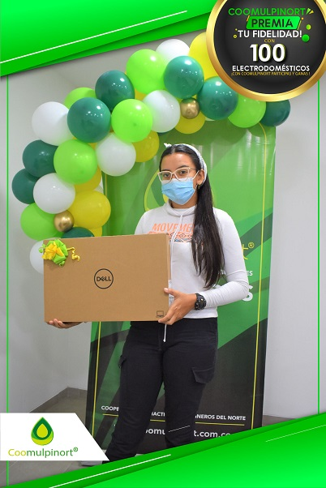
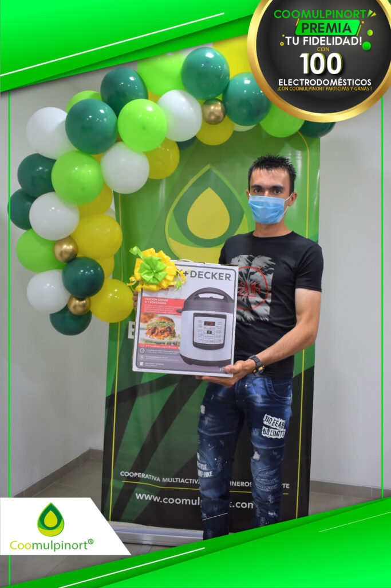
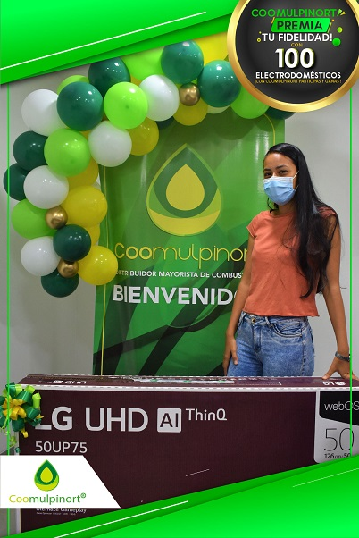
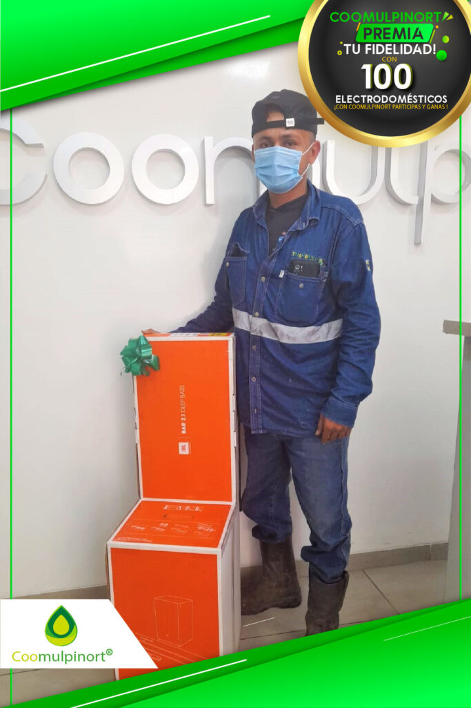

En el municipio de TIBÚ también se llevaron grandes premios en la dinámica de «COOMULPINORT PREMIA TU FIDELIDAD». Gracias por esa gran participación y fidelidad 
 COOMULPINORT tiene presencia en todas las vías del departamento de NORTE DE SANTANDER.
COOMULPINORT tiene presencia en todas las vías del departamento de NORTE DE SANTANDER.




Aún falta ganadores de Tibú por reclamar premios, recuerda que los estamos entregando en la Av. 0B 21-09 de Barrio Blanco.
LLámenos al 3154148812 para agendar la entrega de los premios y síguenos en nuestras redes:
Facebook, Twitter e Instragram : Coomuliport